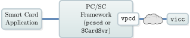

Virtual Smart Card¶
Virtual Smart Card emulates a smart card and makes it accessible through PC/SC. Currently the Virtual Smart Card supports the following types of smart cards:
Generic ISO-7816 smart card including secure messaging
German electronic identity card (nPA) with complete support for EAC (PACE, TA, CA)
Electronic passport (ePass/MRTD) with support for BAC
Cryptoflex smart card (incomplete)
The vpcd is a smart card reader driver for PCSC-Lite 2 and the windows smart card service. It allows smart card applications to access the vpicc through the PC/SC API. By default vpcd opens slots for communication with multiple vpicc’s on localhost on port 35963 and port 35964. But the vpicc does not need to run on the same machine as the vpcd, they can connect over the internet for example.
Although the Virtual Smart Card is a software emulator, you can use PC/SC Relay to make it accessible to an external contact-less smart card reader.
The file utils.py was taken from Henryk Plötz’s cyberflex-shell 1.

Virtual Smart Card used with PCSC-Lite or WinSCard
New in version 0.7: The Virtual Smart Card optionally brings its own standalone implementation of
PC/SC. This allows accessing vpicc without PCSC-Lite. Our PC/SC
implementation acts as replacement for libpcsclite which can lead to
problems when used in parallel with PCSC-Lite.

Virtual Smart Card used with its own PC/SC implementation
On Android, where a traditional PC/SC framework is not available, you can use our framework to make your real contact-less smart accessible through PKCS#11. For example, an email signing application can use the PKCS#11 interface of OpenSC, which is linked against our PC/SC implementation. Then an Android App (e.g. Remote Smart Card Reader) can connect as vpicc delegating all requests and responses via NFC to a contact-less smart card that signs the mail.
Depending on your usage of the vpicc you may need to install the following:
PyCryptodome, PBKDF2 5, PIL 8, readline 6 or PyReadline 7 (emulation of electronic passport with –type=ePass)
OpenPACE 9 (emulation of German identity card with –type=nPA)
libqrencode 10 (to print a QR code on the command line for vpcd-config; an URL will be printed if libqrencode is not available)
Download¶
You can find the latest release of Virtual Smart Card on Github. Older releases are still available on Sourceforge.
Alternatively, you can clone our git repository:
git clone https://github.com/frankmorgner/vsmartcard.git
cd vsmartcard
git submodule update --init --recursive
Installation¶
Installation on Linux, Unix and similar¶
The Virtual Smart Card uses the GNU Build System to compile and install. If you are
unfamiliar with it, please have a look at INSTALL. If you can not find
it, you are probably working bleeding edge in the repository. To generate the
missing standard auxiliary files you need to additionally install libtool and
pkg-config and run the following command in virtualsmartcard:
autoreconf --verbose --install
To configure (configure --help lists possible options), build and install the Virtual Smart Card now do the following:
./configure --sysconfdir=/etc
make
make install
Building and installing vpcd on Mac OS X¶
Mac OS X 10.9 and earlier is using PCSC-Lite as smart card service which allows using the standard routine for installation on Unix.
Mac OS X 10.10 (and later) ships with a proprietary implementation of the PC/SC
layer instead of with PCSC-Lite. As far as we know, this means that smart card
readers must be USB devices instead of directly allowing a more generic type of
reader. To make vpcd work we simply configure it to pretend being a USB smart
card reader with an Info.plist:
./configure --enable-infoplist
make
make install
Building and installing vpcd on Windows¶
New in version 0.7: We implemented vpcd as user mode device driver for Windows so that vpicc can directly be used in Windows’ smart card applications that use PC/SC.
For the Windows integration we extended Fabio Ottavi’s UMDF Driver for a Virtual Smart Card Reader 11 with a vpcd interface. If you choose to download the Windows binaries 14, you may directly jump to step 4.
In the CI environment, we’re building vpcd for Windows with Visual Studio Community 2019 with SDK/WDK for Windows 11. (The WDK version needs to match at least your targeted version of Windows, see this guide for installing VS with WDK 12) The vpcd installer additionally requires the WiX Toolset 3.10 13 to be installed.
Clone the git repository and make sure it is initialized with all submodules:
git clone https://github.com/frankmorgner/vsmartcard.git cd vsmartcard git submodule update --init --recursiveIn Visual Studio open vpcd’s solution
virtualsmartcard\win32\BixVReader.slnand ensure with the configuration manager, that the project is built for your platform (i.e.x64orx82).If you can successfully Build the solution, you can find the installer (
BixVReaderInstaller.msi) invirtualsmartcard\win32\BixVReaderInstaller\bin\*ReleaseTo import the installer’s test signing certificate, double click
BixVReader.cerand add it to the Trusted Root Certification Authority and the Trusted Publishers at the Local Computer” (not the *Current User).On the commandline, you could do this as follows:
CertMgr.exe /add BixVReader.cer /s /r localMachine root /all CertMgr.exe /add BixVReader.cer /s /r localMachine trustedpublisher
Feel free to remove the certificate from the certificate stores once the device is installed.
To install vpcd, double click
BixVReaderInstaller.msi.
For debugging vpcd and building the driver with an older version of Visual Studio or WDK please see Fabio Ottavi’s UMDF Driver for a Virtual Smart Card Reader 11 for details.
All of Fabio’s card connectors are still available, but inactive by default (see Configuring vpcd on Windows below).
Using the Virtual Smart Card¶
The protocol between vpcd and vpicc as well as details on extending vpicc with a different card emulator are covered in Creating a Virtual Smart Card. Here we will focus on configuring and running the provided modules.
Configuring vpcd on Unix¶
The configuration file of vpcd is usually placed into
/etc/reader.conf.d/. For older versions of PCSC-Lite you
need to run update-reader.conf to update pcscd’s main
configuration file. The PC/SC daemon should read it and load the
vpcd on startup. In debug mode pcscd -f -d should say something
like “Attempting startup of Virtual PCD” when loading vpcd.
By default, vpcd opens a socket for vpicc and waits for incoming
connections. The port to open should be specified in CHANNELID and
DEVICENAME:
FRIENDLYNAME "Virtual PCD"
DEVICENAME /dev/null:0x8C7B
LIBPATH /usr/lib/pcsc/drivers/serial/libifdvpcd.so
CHANNELID 0x8C7B
If the first part of the DEVICENAME is different from /dev/null, vpcd
will use this string as a hostname for connecting to a waiting vpicc. vpicc
needs to be started with –reversed in this case.
Configuring vpcd on Mac OS X¶
Mac OS X 10.9 and earlier is using PCSC-Lite as smart card service which allows using the standard routine for configuration on Unix.
On Mac OS X 10.10 you should have configured the generation of
Info.plist at compile time. Now do the following for registering vpcd
as USB device:
Choose an USB device (e.g. mass storage, phone, mouse, …), which will be used to start vpcd. Plug it into the computer.
Run the following command to get the device’s product and vendor ID:
system_profiler SPUSBDataType
Change
/usr/local/libexec/SmartCardServices/drivers/ifd-vpcd.bundle/Info.plistto match your product and vendor ID:
<?xml version="1.0" encoding="UTF-8"?>
<!DOCTYPE plist PUBLIC "-//Apple Computer//DTD PLIST 1.0//EN" "http://www.apple.com/DTDs/PropertyList-1.0.dtd">
<plist version="1.0">
<dict>
<key>CFBundleDevelopmentRegion</key>
<string>English</string>
<key>CFBundleExecutable</key>
<string>libifdvpcd.dylib</string>
<key>CFBundleInfoDictionaryVersion</key>
<string>6.0</string>
<key>CFBundleName</key>
<string>ifd-vpcd</string>
<key>CFBundlePackageType</key>
<string>BNDL</string>
<key>CFBundleSignature</key>
<string>????</string>
<key>CFBundleVersion</key>
<string>0.8</string>
<key>ifdManufacturerString</key>
<string>Virtual Smart Card Architecture</string>
<key>ifdProductString</key>
<string>Virtual PCD</string>
<key>ifdCapabilities</key>
<string>0x00000000</string>
<key>ifdProtocolSupport</key>
<string>0x00000001</string>
<key>ifdVersionNumber</key>
<string>0x00000001</string>
<key>ifdVendorID</key>
<array>
<string>0x18d1</string>
</array>
<key>ifdProductID</key>
<array>
<string>0x4ee1</string>
</array>
<key>ifdFriendlyName</key>
<array>
<string>/dev/null:0x8C7B</string>
</array>
<key>Copyright</key>
<string>This driver is protected by terms of the GNU General Public License version 3, or (at your option) any later version.</string>
</dict>
</plist>
Note that ifdFriendlyName can be used in the same way as DEVICENAME
described above.
Restart the PC/SC service:
sudo killall -SIGKILL -m '.*com.apple.ifdreader'
Now, every time you plug in your USB device vpcd will be started. It will be stopped when you unplug the device.
To verify the installation, execute:
system_profiler SPSmartCardsDataType
In case of a problem, inspect the logs:
log show --predicate '(subsystem == "com.apple.CryptoTokenKit")' --info --debug
Configuring vpcd on Windows¶
The configuration file BixVReader.ini of vpcd is installed to
C:\Windows (%SystemRoot%). The user mode device driver
framework (WUDFHost.exe) should read it automatically and load the
vpcd on startup. The Windows Device Manager mmc devmgmt.msc should
list the Bix Virtual Smart Card Reader.
vpcd opens a socket for vpicc and waits for incoming connections. The port
to open should be specified in TCP_PORT:
[Driver]
NumReaders=3
[Reader0]
RPC_TYPE=0
VENDOR_NAME=Fabio Ottavi
VENDOR_IFD_TYPE=Pipe Reader
DECIVE_UNIT=0
[Reader1]
RPC_TYPE=1
VENDOR_NAME=Fabio Ottavi
VENDOR_IFD_TYPE=TCP/IP Reader
DECIVE_UNIT=1
[Reader2]
RPC_TYPE=2
VENDOR_NAME=Virtual Smart Card Architecture
VENDOR_IFD_TYPE=Virtual PCD
TCP_PORT=35963
DECIVE_UNIT=2
Currently it is not possible to configure the Windows driver to connect to an vpicc running with –reversed.
Running vpicc¶
The compiled Windows binaries 14 of vpicc include OpenPACE. The other dependencies listed above need to be installed seperately. You can start the vpicc via python.exe vicc.py. On all other systems an executable script vicc is installed using the autotools.
The vpicc option –help gives an overview about the command line switches:
usage: vicc [-h] [-t {iso7816,cryptoflex,ePass,nPA,relay,handler_test}] [-v]
[-f FILE] [-H HOSTNAME] [-P PORT] [-R] [--version]
[--reader READER] [--mitm MITM] [--ef-cardaccess EF_CARDACCESS]
[--ef-cardsecurity EF_CARDSECURITY] [--cvca CVCA]
[--disable-ta-checks] [--ca-key CA_KEY] [-d DATASETFILE]
[--esign-cert ESIGN_CERT] [--esign-ca-cert ESIGN_CA_CERT]
Virtual Smart Card 0.8: Smart card emulator written in Python. The emulator
connects to the virtual smart card reader reader (vpcd). Smart card
applications can access the Virtual Smart Card through the vpcd via PC/SC.
optional arguments:
-h, --help show this help message and exit
-t {iso7816,cryptoflex,ePass,nPA,relay,handler_test}, --type {iso7816,cryptoflex,ePass,nPA,relay,handler_test}
type of smart card to emulate (default: iso7816)
-v, --verbose Use (several times) to be more verbose
-f FILE, --file FILE load a saved smart card image
-H HOSTNAME, --hostname HOSTNAME
specifiy vpcd's host name if vicc shall connect to it.
(default: localhost)
-P PORT, --port PORT port of connection establishment (default: 35963)
-R, --reversed use reversed connection mode. vicc will wait for an
incoming connection from vpcd. (default: False)
--version show program's version number and exit
Relaying a local smart card (`--type=relay`):
--reader READER number of the reader containing the card to be relayed
(default: 0)
--mitm MITM relative path to a file containing a Man-in-the-Middle
class that is supposed to be used with the relay
Emulation of German identity card (`--type=nPA`):
--ef-cardaccess EF_CARDACCESS
the card's EF.CardAccess (default: use file from first
generation nPA)
--ef-cardsecurity EF_CARDSECURITY
the card's EF.CardSecurity (default: use file from
first generation nPA)
--cvca CVCA trust anchor for verifying certificates in TA
(default: use libeac's trusted certificates)
--disable-ta-checks disable checking the validity period of CV certifcates
(default: False)
--ca-key CA_KEY the chip's private key for CA (default: randomly
generated, invalidates signature of EF.CardSecurity)
-d DATASETFILE, --datasetfile DATASETFILE
Load the smartcard's data groups (DGs) from the
specified dataset file. For DGs not in dataset file
default values are used. The data groups in the data
set file must have the following syntax:
---------------------------------------------------
Datagroupname=Datagroupvalue
---------------------------------------------------
For Example: GivenNames=GERTRUD. The following Dataset
Elements may be used in the dataset file:
DocumentType, IssuingState, DateOfExpiry, GivenNames,
FamilyNames, ReligiousArtisticName, AcademicTitle,
DateOfBirth, PlaceOfBirth, Nationality, Sex,
BirthName, Country, City, ZIP, Street, CommunityID,
ResidencePermit1, ResidencePermit2, dg12, dg14, dg15,
dg16, dg21.
--esign-cert ESIGN_CERT
the card holder's certificate for QES
--esign-ca-cert ESIGN_CA_CERT
the CA's certificate for QES
Report bugs to https://github.com/frankmorgner/vsmartcard/issues
New in version 0.7: We implemented vpcd-config which tries to guess the local IP address and outputs vpcd’s configuration. vpicc’s options should be chosen accordingly (–hostname and –port) vpcd-config also prints a QR code for configuration of the Remote Smart Card Reader.
When vpcd and vpicc are connected you should be able to access the card through the PC/SC API. You can use the opensc-explorer or pcsc_scan for testing. In Virtual Smart Card’s root directory we also provide scripts for testing with npa-tool 15 and PCSC-Lite’s smart card reader driver tester.
Testing vpicc -t ePass¶
A simple tool to test BAC is available for Python 2.7. On Ubuntu, its requiremets are installed as follows:
sudo apt-get install python2.7-dev
curl https://bootstrap.pypa.io/pip/2.7/get-pip.py -o get-pip.py
python2.7 get-pip.py
python2.7 -m pip install pycryptodomex pyscard
python2.7 readpass.py --no-gui
git clone https://github.com/henryk/cyberflex-shell
cd cyberflex-shell
Now we can create and run a small script:
echo "select_application a0000002471001" > script.txt
echo "perform_bac L898902C<3UTO6908061F9406236ZE184226B<<<<<14" >> script.txt
python2.7 cyberflex-shell.py script.txt
The tool will wait for a (virtual) smart card to appear. Start vpicc and make
sure to configure it with the correct MRZ, i.e.
P<UTOERIKSSON<<ANNA<MARIX<<<<<<<<<<<<<<<<<<<L898902C<3UTO6908061F9406236ZE184226B<<<<<14
in this case:
vicc -t ePass
Once the card is connected, cyberflex-shell will quickly perform BAC and
exit. Running the tool without arguments allows entering in interactive mode
to run additional tests.
Question¶
Do you have questions, suggestions or contributions? Feedback of any kind is more than welcome! Please use our project trackers.